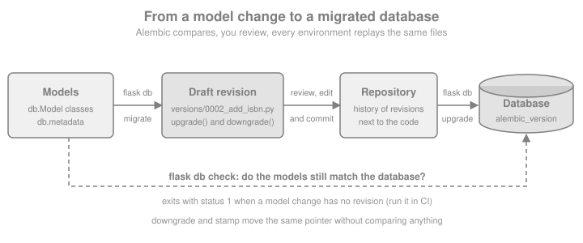
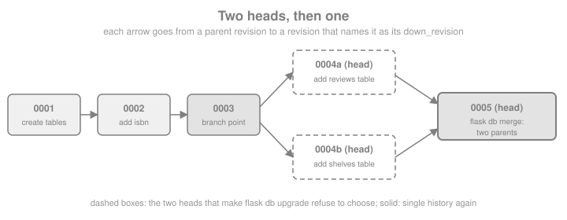

Database Migrations
|
This content was generated with the assistance of AI and should be verified against the official documentation before being relied on in production. |
This page is written against Flask 3.1.3, Flask-Migrate 4.1.0 (released 2025-01-10, still the latest release on
2026-10-07), Alembic 1.20.0, Flask-SQLAlchemy 3.1.1 with SQLAlchemy 2.1.3, and Flask-Alembic 3.3.0, checked on
2026-10-07. Every Python block was executed on Python 3.13 against SQLite; the flask db transcripts were captured from
the real command line in a scratch project, and the PostgreSQL, Kubernetes and Compose snippets are not executed (they
need a server or a cluster). Flask 3.2 is not released yet and none of the changes announced for it (contexts, redirects,
teardown, decorators) is specific to migrations; Flask-Migrate only needs an application context. A migration is a
small, versioned program that moves a database schema from one state to the next, and a migration history is the
ordered chain of those programs stored in your repository next to the code that needs them. In the Flask world that job
belongs to Alembic, the migration tool of the SQLAlchemy project, and to Flask-Migrate, the extension that plugs
Alembic into the flask command and into Flask-SQLAlchemy. This page follows the Bookshelf project from an empty
repository to a chain of reviewed revisions, covers the traps that autogeneration hides, and ends with how to run the
chain safely when you deploy.
Why Migrations and Not create_all
db.create_all() creates the tables that are missing and nothing else: it never adds a column to an existing table,
never changes a type and never drops anything (see
Flask-SQLAlchemy for what it does and when it is enough). The moment a model
changes after real data exists, the schema has to be changed in place, and a team needs to be able to replay exactly
that change on every laptop, test database, staging environment and production database, in the same order. Migrations
give you four things create_all cannot:
-
A history in version control. Each schema change is a file reviewed in the same pull request as the model change.
-
Reproducibility. An empty database plus
flask db upgradeyields the production schema; no one needs a dump. -
Reversibility, within limits. Each revision carries an
upgrade()and adowngrade()(see Downgrades, Offline SQL and Stamping for why the second one is weaker than it looks). -
Data changes next to schema changes. Backfilling a new column is part of the same versioned step (see The Trap of the Required Column, and Data Migrations).
Alembic stores the current position of each database in a one-row table named alembic_version (column
version_num), so any database always knows which revision it is at. Autogenerate (the flask db migrate command)
compares your models with the live database and writes the difference as a draft script. The word draft matters; most
of this page is about the things the draft gets wrong.
The books of this section are consistent about the starting point and out of date about the details. The Flask
Framework Cookbook (chapter 3, both editions) and Full-Stack Flask and React (the SQL and data modelling chapter) show
flask db init, flask db migrate and flask db upgrade, and those three commands still work unchanged. What changed
around them: Flask-Script and MigrateCommand (the older python manage.py db ... style, see Where the Books Are Outdated) are gone,
FLASK_APP is replaced by flask --app, the extension’s defaults changed in 4.0, and the models the books feed to
autogenerate use the legacy Model.query and untyped db.Column style. Microservice APIs lists "Alembic autogenerate"
among its service implementation patterns; the practical consequence for a layered or hexagonal design is that
migrations are infrastructure code: they belong to the persistence adapter, they describe tables rather than domain
objects, and (as The Trap of the Required Column, and Data Migrations shows) they must not import the application’s models.
The Pieces and How They Fit
Four components cooperate, and knowing which does what explains every error message you will meet:
| Component | Role |
|---|---|
Flask CLI (Click) |
Provides the |
Flask-Migrate |
Registers the |
Alembic |
Reads the revision scripts, compares metadata with the database (autogenerate), and runs |
SQLAlchemy / Flask-SQLAlchemy |
Owns the engine and the |

The lifecycle in one line: change a model, run flask db migrate to draft a revision, read and edit it, commit it with the
model change, and run flask db upgrade everywhere. flask db check closes the loop by telling you whether the models
and the database still agree.
Installing and Wiring Flask-Migrate
pip install Flask-MigrateSource: Flask-Migrate: Installation
The package depends on Flask, Flask-SQLAlchemy and Alembic, so those come with it. For PostgreSQL add a driver such as
psycopg (see the driver notes on the Flask-SQLAlchemy page). The wiring has the same shape as every Flask extension: a
module-level object created without an application, and init_app called in the application factory (see
Application Factory & Project Layout). The block below is
the Bookshelf persistence layer, and the later sections of this page keep extending it:
import os
from flask import Flask
from flask_migrate import Migrate
from flask_sqlalchemy import SQLAlchemy
from sqlalchemy import ForeignKey, MetaData, String
from sqlalchemy.orm import DeclarativeBase, Mapped, mapped_column, relationship
class Base(DeclarativeBase):
# Constraint names that do not depend on the database vendor (see the naming section)
metadata = MetaData(naming_convention={
"ix": "ix_%(column_0_label)s",
"uq": "uq_%(table_name)s_%(column_0_name)s",
"ck": "ck_%(table_name)s_%(constraint_name)s",
"fk": "fk_%(table_name)s_%(column_0_name)s_%(referred_table_name)s",
"pk": "pk_%(table_name)s",
})
db = SQLAlchemy(model_class=Base)
migrate = Migrate()
class Author(db.Model):
id: Mapped[int] = mapped_column(primary_key=True)
name: Mapped[str] = mapped_column(String(120), unique=True)
books: Mapped[list["Book"]] = relationship(back_populates="author")
class Book(db.Model):
id: Mapped[int] = mapped_column(primary_key=True)
title: Mapped[str] = mapped_column(String(200))
author_id: Mapped[int] = mapped_column(ForeignKey("author.id"))
author: Mapped[Author] = relationship(back_populates="books")
def create_app(test_config: dict | None = None) -> Flask:
app = Flask(__name__)
app.config.from_mapping(
SQLALCHEMY_DATABASE_URI=os.environ.get("DATABASE_URL", "sqlite:///bookshelf.db"),
MIGRATIONS_DIR=os.environ.get("MIGRATIONS_DIR", "migrations"),
)
if test_config:
app.config.update(test_config)
db.init_app(app)
migrate.init_app(app, db, directory=app.config["MIGRATIONS_DIR"])
return appSource: Flask-Migrate: Example
Everything Flask-Migrate does is controlled by the arguments of Migrate(...) and init_app(...):
| Argument | Default | Meaning |
|---|---|---|
|
none |
The application (optional when you call |
|
|
Where the migration repository lives. A relative path is relative to the current working directory, not to the application’s root folder, so run the CLI from the project root or set an absolute path. |
|
|
Name of the command group, so |
|
|
Make autogenerate detect column type changes. It was off before Flask-Migrate 4.0. |
|
|
Write the generated operations with |
any other keyword |
none |
Passed to Alembic’s |
The directory can also come from the environment: the db group is a Click group under the flask command, whose
auto-environment prefix is FLASK, so FLASK_DB_DIRECTORY=/srv/bookshelf/migrations is equivalent to flask db -d
/srv/bookshelf/migrations … (Flask-Migrate 4.1.0 added this). The
factory above reads the same setting from MIGRATIONS_DIR so that tests and the examples of this page can point at a
scratch folder.
A SQLite URL such as sqlite:///bookshelf.db is resolved by Flask-SQLAlchemy 3.x relative to the application’s instance
folder, not the working directory, which is why the transcripts below show instance/bookshelf.db. Models must be
imported before you autogenerate: Alembic only sees tables registered on the metadata, so in a package layout import the
models module from the factory (or from the package __init__), or autogenerate will report that nothing changed.
The examples run in a scratch directory so that the page never touches the working directory. The helper below calls
the real db commands through Flask’s CLI test runner, exactly as you would type them, and fails if a command exits with
an unexpected status (a hand-run session is shown in the transcripts that follow):
import tempfile
from pathlib import Path
work = Path(tempfile.mkdtemp(prefix="bookshelf-migrations-"))
app = create_app({
"SQLALCHEMY_DATABASE_URI": f"sqlite:///{work / 'bookshelf.db'}",
"MIGRATIONS_DIR": str(work / "migrations"),
})
runner = app.test_cli_runner()
def flask_db(*args, ok=True, runner=runner):
"""Run 'flask db <args>' and check the exit status."""
result = runner.invoke(args=["db", *args])
assert (result.exit_code == 0) == ok, result.output
return resultName Your Constraints Before the First Migration
The naming_convention in the Base class above is the single most useful line for the long life of a migration
history. Without it, unique, foreign key, primary key and check constraints are anonymous in the model, and the database
invents a name for each: PostgreSQL gives book_author_id_fkey, other engines use different schemes and some use
random identifiers. Alembic needs a constraint’s name to drop or alter it, so a migration that says drop_constraint
for a name nobody ever chose cannot be written reliably, and the same model produces differently named constraints on
SQLite (development) and PostgreSQL (production). With a convention SQLAlchemy names every constraint deterministically
from the table and column names, autogenerate writes those names into the scripts (as op.f('uq_author_name'), where
op.f marks a name that is already final so it is not run through the convention a second time), and downgrade()
can drop what upgrade() created.
Set the convention before you generate the first revision: changing it later renames nothing in existing databases, and autogenerate does not rename constraints for you. The convention above is the one the Alembic documentation recommends.
Creating the Migration Repository: flask db init
flask db init creates the repository once per project and writes it with the template you choose; commit all of it,
because it is part of your source code:
$ flask --app bookshelf:create_app db initCreating directory ./migrations ... done
Creating directory ./migrations/versions ... done
Generating ./migrations/script.py.mako ... done
Generating ./migrations/env.py ... done
Generating ./migrations/README ... done
Generating ./migrations/alembic.ini ... done
Please edit configuration/connection/logging settings in ./migrations/alembic.ini before proceeding.Source: Flask-Migrate: Command Reference
The closing line is a leftover from plain Alembic: with Flask-Migrate you do not put the database URL in alembic.ini,
because env.py asks your running application for its engine. What each generated file is for:
| File | Purpose |
|---|---|
|
One Python file per revision, named |
|
The Alembic environment: it obtains the engine and the metadata from |
|
The Mako template every new revision file is rendered from. |
|
Alembic’s configuration, which for Flask-Migrate is mostly logging. |
|
One line naming the template. |
Templates select the layout of env.py. flask db list-templates prints them, and -t chooses one:
result = flask_db("list-templates")
flask_db("init")
print(sorted(p.name for p in (work / "migrations").iterdir()))
for option in ("--multidb", "--package", "-t aioflask"):
scratch = work / ("init-" + option.strip("-").replace(" ", "-"))
flask_db("-d", str(scratch), "init", *option.split())
print(option, sorted(p.name for p in scratch.iterdir()))Source: Flask-Migrate: Command Reference
| Template / flag | Use |
|---|---|
|
One database. |
|
Several databases declared as Flask-SQLAlchemy binds (see Multiple Databases). |
|
For applications built on the third-party aioflask project with an async SQLAlchemy engine. Not needed for Flask’s own |
|
Also writes |
The db group also accepts -d / --directory before the subcommand (as in the block above) and -x / --x-arg, which
passes free-form key=value strings to a custom env.py (read them with context.get_x_argument(as_dictionary=True);
Alembic’s cookbook uses this to switch data migrations on and off).
The First Revision: flask db migrate
With the models above in place, migrate compares them with the database and writes a revision. -m is the message that
becomes the file name slug, and --rev-id replaces the random revision id with one you choose (the examples use
0001, 0002 … so the transcripts stay readable; in a real project let Alembic generate ids, or use the sequence
numbers only if the whole team agrees to):
$ flask --app bookshelf:create_app db migrate -m "create author and book" --rev-id 0001INFO [alembic.runtime.migration] Context impl SQLiteImpl.
INFO [alembic.runtime.migration] Will assume non-transactional DDL.
INFO [alembic.autogenerate.compare.tables] Detected added table 'author'
INFO [alembic.autogenerate.compare.tables] Detected added table 'book'
Generating ./migrations/versions/0001_create_author_and_book.py ... doneThe output is abridged (Alembic also logs the autogenerate plugins it loads). Two lines carry information: the
implementation chosen for your database, and Will assume non-transactional DDL, which is Alembic telling you that on
SQLite a failed migration does not roll back (see Transactions, Locks and Database Differences). The generated file, with the real names that the
naming convention produced:
"""create author and book
Revision ID: 0001
Revises:
Create Date: 2026-10-07 15:38:34.603029
"""
from alembic import op
import sqlalchemy as sa
# revision identifiers, used by Alembic.
revision = '0001'
down_revision = None
branch_labels = None
depends_on = None
def upgrade():
# ### commands auto generated by Alembic - please adjust! ###
op.create_table('author',
sa.Column('id', sa.Integer(), nullable=False),
sa.Column('name', sa.String(length=120), nullable=False),
sa.PrimaryKeyConstraint('id', name=op.f('pk_author')),
sa.UniqueConstraint('name', name=op.f('uq_author_name'))
)
op.create_table('book',
sa.Column('id', sa.Integer(), nullable=False),
sa.Column('title', sa.String(length=200), nullable=False),
sa.Column('author_id', sa.Integer(), nullable=False),
sa.ForeignKeyConstraint(['author_id'], ['author.id'], name=op.f('fk_book_author_id_author')),
sa.PrimaryKeyConstraint('id', name=op.f('pk_book'))
)
# ### end Alembic commands ###
def downgrade():
# ### commands auto generated by Alembic - please adjust! ###
op.drop_table('book')
op.drop_table('author')
# ### end Alembic commands ###The identifiers at the top form the chain: revision is this file’s id and down_revision the id of its parent (None
for the first one). branch_labels and depends_on are used for branches (see Branches, Multiple Heads and Merges). The same step from Python,
followed by applying it and looking at what Alembic left in the database:
from sqlalchemy import inspect, text
flask_db("migrate", "-m", "create author and book", "--rev-id", "0001")
print([p.name for p in (work / "migrations" / "versions").glob("*.py")])
flask_db("upgrade")
with app.app_context():
print(sorted(inspect(db.engine).get_table_names()))
print(db.session.execute(text("SELECT version_num FROM alembic_version")).scalar_one())Source: Flask-Migrate: Command Reference
flask db upgrade applied 0001, so the database now holds author, book and alembic_version. The inspector call is
the current replacement for db.engine.table_names(), which Full-Stack Flask and React uses and which SQLAlchemy 2.0
removed.
If flask db migrate finds no difference between the models and the database it writes no file and logs
No changes in schema detected. (the default env.py installs a process_revision_directives hook for that; Flask-Migrate
4.0.5 made the hook configurable). If it complains that the database is not up to date, run flask db upgrade first:
autogenerate compares against the current state of the database, so that state must be at the head.
The Command Reference
Every command runs inside an application context and accepts -d / --directory (also before the subcommand). The
ones you use daily are migrate, upgrade, downgrade, current, history and check:
| Command | What it does | Useful options |
|---|---|---|
|
Create the migration repository. |
|
|
Print the available repository templates. |
|
|
Autogenerate a revision from the difference between models and database (an alias of |
|
|
Create an empty revision, or autogenerate with |
the same options as |
|
Open a revision in |
the revision (default |
|
Apply revisions up to the target (default |
a revision or relative step, |
|
Revert to a target (default |
a revision, |
|
Show the revision(s) the database is at. |
|
|
List revisions, newest first. |
|
|
Show one revision (default |
the revision |
|
Show head revisions (more than one means a fork) and the points where the history splits. |
|
|
Create a revision that joins several heads. |
|
|
Record a revision in |
a revision, |
|
Exit non-zero if the models differ from the database. Added in Flask-Migrate 4.0.2. |
Source: Flask-Migrate: Command Reference
Revision arguments accept ids (or unique prefixes), head, heads, base, relative steps such as +1 or -2, and
ranges start:end for the offline commands. Flask-Migrate 2.6.0 removed the old --head-only option, and since 3.0.0
(see Where the Books Are Outdated) there is no Flask-Script command object: flask db is a normal Flask CLI group.
Evolving the Schema and Reviewing the Draft
Autogenerate is a diff engine with limits. Alembic’s documentation lists what it detects reliably: added and removed tables
and columns, changes of nullability, and basic changes to indexes, explicitly named unique constraints and foreign keys.
Column type changes are detected (Flask-Migrate switches compare_type on by default), but server default changes are
not unless you pass compare_server_default=True. What it cannot detect matters more:
-
Renames. A renamed table or column is seen as one drop plus one add, and applying that script destroys the data. Replace the pair by
op.rename_tableorop.alter_column(..., new_column_name=...)by hand. -
Anonymous constraints (the reason for Name Your Constraints Before the First Migration).
-
Types that the database does not represent natively, such as an
Enumon a database without enums, and changes of PostgreSQL enum members. -
Anything not in the metadata: views, triggers, functions, partial extras that you created by hand.
-
Intent. A new
NOT NULLcolumn on a table that already has rows is perfectly valid in the model and impossible to apply, as the next example shows.
First an easy change, adding an optional isbn column to Book. In a real project you edit the class; the page adds the
attribute to the class so that the whole walkthrough runs in a single process:
Book.isbn = mapped_column(String(13), nullable=True) # in your code: isbn: Mapped[str | None] = mapped_column(String(13))
flask_db("migrate", "-m", "add isbn", "--rev-id", "0002")
script = next((work / "migrations" / "versions").glob("0002_*.py"))
body = script.read_text()
assert "batch_alter_table" in body and "add_column" in body
flask_db("upgrade")The relevant part of the generated upgrade() and downgrade() shows render_as_batch=True at work:
def upgrade():
# ### commands auto generated by Alembic - please adjust! ###
with op.batch_alter_table('book', schema=None) as batch_op:
batch_op.add_column(sa.Column('isbn', sa.String(length=13), nullable=True))
# ### end Alembic commands ###
def downgrade():
# ### commands auto generated by Alembic - please adjust! ###
with op.batch_alter_table('book', schema=None) as batch_op:
batch_op.drop_column('isbn')
# ### end Alembic commands ###The review checklist that follows from the limits above, to apply to every generated file before committing it:
-
Read the whole file; the comment
please adjust!is meant literally. -
Look for
drop_tableanddrop_columnpairs that are really renames. -
Look for
nullable=Falseon a column added to a table that may hold rows. -
Check that every constraint has a name, and that
downgrade()undoes whatupgrade()does. -
Check server defaults and types, especially on the database you deploy to rather than the one you develop on.
-
Remove changes to objects the application does not own (see
include_objectin Tuningenv.pyandMigrateOptions). -
Make sure the file contains no secrets or production data.
SQLite and Batch Mode
SQLite supports almost none of ALTER TABLE: it can add a column and rename things, but it cannot change a column’s
type or nullability, or add or drop a constraint. Alembic’s batch mode works around that with a "move and copy"
procedure: it reflects the table, creates a new table with the requested changes under a temporary name
(_alembic_tmp_<table>), copies the rows over with INSERT ... SELECT, drops the old table and renames the new one.
Flask-Migrate enables it by default (render_as_batch=True) and the generated code uses op.batch_alter_table as in the
example above. On other databases batch mode emits ordinary ALTER statements, so the scripts stay portable; passing
recreate="always" to batch_alter_table forces move and copy elsewhere.
Its limits are the limits of the copy: foreign keys that other tables enforce against the table, self-referential keys
and CHECK constraints need care, and an unnamed constraint cannot be targeted (another reason for Name Your Constraints Before the First Migration). Batch mode
needs a live connection to reflect the table, so offline mode (Offline mode: --sql) fails for scripts that use it on SQLite.
The Trap of the Required Column, and Data Migrations
Now the change that autogenerate gets wrong. Every book gets a slug that must be present and unique. The model change
is natural, and the draft looks reasonable:
Book.slug = mapped_column(String(200), nullable=False, unique=True) # in your code: slug: Mapped[str] = mapped_column(String(200), unique=True)
with app.app_context():
# rows that were created before the slug column existed
db.session.execute(text("INSERT INTO author (name) VALUES ('Ursula K. Le Guin')"))
db.session.execute(text("INSERT INTO book (title, author_id) VALUES ('A Wizard of Earthsea', 1), ('The Dispossessed', 1)"))
db.session.commit()
flask_db("migrate", "-m", "add slug", "--rev-id", "0003")
draft = next((work / "migrations" / "versions").glob("0003_*.py")).read_text()
assert "nullable=False" in draft
failed = flask_db("upgrade", ok=False)
print(type(failed.exception).__name__, str(failed.exception.orig))The generated upgrade() adds the column as NOT NULL with no default, and the database refuses because two rows exist.
From a real command line the failure is a Python traceback that ends with:
sqlalchemy.exc.IntegrityError: (sqlite3.IntegrityError) NOT NULL constraint failed: _alembic_tmp_book.slug
[SQL: INSERT INTO _alembic_tmp_book (id, title, author_id, isbn) SELECT book.id, book.title, book.author_id, book.isbn
FROM book](PostgreSQL reports column "slug" of relation "book" contains null values instead.) Note what SQLite left behind: the
leftover _alembic_tmp_book table. SQLite runs this DDL outside a transaction, so nothing was rolled back, and the next
attempt fails with table _alembic_tmp_book already exists until you drop it by hand. On PostgreSQL the whole revision
rolls back (see Transactions, Locks and Database Differences). The cure is the expand and contract sequence, written by hand in the same revision:
add the column as nullable, backfill it, then tighten it. Replace the generated file with this one; the page writes it
from Python only so that the example keeps running, in a project you simply edit 0003_add_slug.py:
REVISION_0003 = '''"""add slug
Revision ID: 0003
Revises: 0002
"""
from alembic import op
import sqlalchemy as sa
revision = "0003"
down_revision = "0002"
branch_labels = None
depends_on = None
# A lightweight table: it names only the columns this migration needs and
# does not import the application's models, which will change after this file is written.
book = sa.table("book", sa.column("title", sa.String), sa.column("slug", sa.String))
def upgrade():
# 1. expand: add the column as nullable so existing rows stay valid
with op.batch_alter_table("book") as batch_op:
batch_op.add_column(sa.Column("slug", sa.String(length=200), nullable=True))
# 2. backfill from existing data (a Core expression: it also works with --sql)
op.execute(
book.update().values(slug=sa.func.lower(sa.func.replace(book.c.title, " ", "-")))
)
# 3. contract: now the column can be NOT NULL and unique
with op.batch_alter_table("book") as batch_op:
batch_op.alter_column("slug", existing_type=sa.String(length=200), nullable=False)
batch_op.create_unique_constraint(batch_op.f("uq_book_slug"), ["slug"])
def downgrade():
with op.batch_alter_table("book") as batch_op:
batch_op.drop_constraint(batch_op.f("uq_book_slug"), type_="unique")
batch_op.drop_column("slug")
'''
with app.app_context():
# SQLite is not transactional for this DDL: remove what the failed attempt left behind
db.session.execute(text("DROP TABLE IF EXISTS _alembic_tmp_book"))
db.session.commit()
next((work / "migrations" / "versions").glob("0003_*.py")).write_text(REVISION_0003)
flask_db("upgrade")
with app.app_context():
print(db.session.execute(text("SELECT title, slug FROM book ORDER BY id")).all())That file is the template for any data migration. The rules that make it safe:
-
Do not import your models. The ORM classes describe today’s schema; a revision written a year ago must run against the schema of its own time. Declare the lightweight
sa.table(...)/sa.column(...)objects you need inside the file. This is also why migrations sit outside a domain layer in a hexagonal design: they know tables, not entities. -
Use
op.executewith Core constructs orsa.textwith bound parameters, never string formatting (an f-string inop.executeis an SQL injection vector the moment any value is not a constant). -
Small seed data goes through
op.bulk_insert(table, rows), which also works in offline mode. -
Large backfills (millions of rows) should run in batches from a separate job, not inside the schema revision that holds locks; Alembic’s cookbook describes keeping data migrations in their own script.
-
Downgrades that drop data are not reversible. Say so in the docstring.
For the expand and contract pattern at deploy time see Running Migrations at Deploy Time.
Downgrades, Offline SQL and Stamping
flask db downgrade reverts one step by default and runs the revision’s downgrade(). Treat it as a development tool: a
downgrade that drops a column loses the column’s data even if the upgrade is reversible, and production recoveries are
usually "restore a backup, or ship a new forward revision" rather than "run downgrade". Write the function anyway, and
test it (see Testing Migrations), because it is also how you discard the work of a branch you are switching away from.
flask_db("downgrade")
with app.app_context():
print([c["name"] for c in inspect(db.engine).get_columns("book")])
flask_db("upgrade")Source: Flask-Migrate: Command Reference
Offline mode: --sql
upgrade, downgrade and stamp accept --sql, which does not touch the database and prints the SQL that would run,
which is what you hand to a DBA who applies schema changes by hand or what you keep as an artefact of a release. A range
start:end is required when you do not want the whole history. The script contains literal values, so treat a
script generated from a data migration as sensitive. The block runs the command; its output (the same text) goes to the
terminal because Alembic prints to its own stdout:
$ flask --app bookshelf:create_app db upgrade --sql 0001:0002INFO [alembic.runtime.migration] Context impl SQLiteImpl.
INFO [alembic.runtime.migration] Generating static SQL
INFO [alembic.runtime.migration] Will assume non-transactional DDL.
INFO [alembic.runtime.migration] Running upgrade 0001 -> 0002, add isbn
-- Running upgrade 0001 -> 0002
ALTER TABLE book ADD COLUMN isbn VARCHAR(13);
UPDATE alembic_version SET version_num='0002' WHERE alembic_version.version_num = '0001';flask_db("upgrade", "--sql", "0001:0002") # works: a plain ADD COLUMN
failed = flask_db("upgrade", "--sql", "0002:0003", ok=False) # fails: SQLite batch mode needs a live connection
assert "copy_from" in str(failed.exception) or "copy_from" in failed.outputThe second command shows the limit stated in SQLite and Batch Mode: 0002:0003 needs a table move and copy on SQLite, which needs
reflection, so offline mode refuses (the error message names copy_from). Against PostgreSQL the same revision is a
sequence of ordinary ALTER statements and generates fine. Because 0003 uses op.execute with a Core update(),
the backfill is rendered as literal SQL (UPDATE book SET slug=lower(replace(book.title, ' ', '-'))) when it can be.
flask db stamp and adopting an existing database
stamp writes a revision id into alembic_version without running anything. It is how you put an existing database
under migration control, and the cure for the classic mistake of building a database with create_all and migrating it
later: create_all made the tables but not the alembic_version row, so upgrade tries to create tables that are
already there and fails. The cookbook-style flow of running db.create_all() from flask shell is therefore fine for a
throwaway database, and wrong for any database you will also migrate.
existing = create_app({
"SQLALCHEMY_DATABASE_URI": f"sqlite:///{work / 'existing.db'}",
"MIGRATIONS_DIR": str(work / "migrations"),
})
existing_runner = existing.test_cli_runner()
with existing.app_context():
db.create_all() # the schema exists, but alembic_version does not
flask_db("upgrade", ok=False, runner=existing_runner) # table already exists
flask_db("stamp", "head", runner=existing_runner) # declare: this database is already at the head
flask_db("upgrade", runner=existing_runner) # nothing left to do
with existing.app_context():
print(db.session.execute(text("SELECT version_num FROM alembic_version")).scalar_one())Source: Flask-Migrate: Command Reference
For a legacy database that has no migrations at all, the usual sequence is: write models that match it, run flask db
migrate against it (a draft that creates everything), delete the script’s operations or edit it so that it is a valid
baseline, run flask db stamp on that revision for the existing database, and flask db upgrade on new ones.
Branches, Multiple Heads and Merges
Two developers who each run flask db migrate from the same revision produce two revisions with the same parent: the
history forks and has two heads. Alembic refuses to guess which one upgrade means. flask db heads and flask db
branches show the fork, and flask db merge writes a revision with two parents that closes it:

flask_db("revision", "-m", "add reviews table", "--rev-id", "0004a")
flask_db("revision", "-m", "add shelves table", "--rev-id", "0004b", "--head", "0003", "--splice")
heads = flask_db("heads")
failed = flask_db("upgrade", ok=False)
assert "Multiple head revisions" in str(failed.exception) or "Multiple head revisions" in failed.output
flask_db("merge", "-m", "merge reviews and shelves", "--rev-id", "0005", "0004a", "0004b")
flask_db("upgrade")
with app.app_context():
print(db.session.execute(text("SELECT version_num FROM alembic_version")).scalar_one())Source: Alembic: Working with Branches
On the command line the fork looks like this:
$ flask db heads
0004a (head)
0004b (head)
$ flask db branches
0003 (branchpoint)
-> 0004b (head)
-> 0004a (head)
$ flask db upgrade
ERROR [flask_migrate] Error: Multiple head revisions are present for given argument 'head'; please specify a specific target revision, '<branchname>@head' to narrow to a specific head, or 'heads' for all heads
$ flask db merge -m "merge reviews and shelves" --rev-id 0005 0004a 0004b
Generating ./migrations/versions/0005_merge_reviews_and_shelves.py ... done
$ flask db history
0004a, 0004b -> 0005 (head) (mergepoint), merge reviews and shelves
0003 -> 0004a, add reviews table
0003 -> 0004b, add shelves table
0002 -> 0003 (branchpoint), add slug
0001 -> 0002, add isbn
<base> -> 0001, create author and book--splice is what allows revision to attach to a revision that is not the current head (without it Alembic refuses to
create a second head by accident). The error message also names the alternatives: flask db upgrade heads applies every
head without merging, and a revision may carry a branch_labels entry so that flask db upgrade shelves@head addresses
one named branch. Named branches and depends_on (a revision that needs another to have run without being its descendant)
are for plugins and truly independent modules; for an ordinary application, merge. A CI job that runs flask db heads and
fails when it prints more than one line catches forks before they reach main.
Multiple Databases
When models belong to more than one Flask-SQLAlchemy bind (see Flask-SQLAlchemy),
initialise the repository with --multidb so that env.py iterates over the default database and every key of
SQLALCHEMY_BINDS, and so that every revision has one upgrade_<name>() and downgrade_<name>() function per database
(the default database is the empty name, hence upgrade_()). Each database keeps its own alembic_version table.
import sqlite3
from flask_migrate import Migrate
from flask_sqlalchemy import SQLAlchemy
class MultiBase(DeclarativeBase):
pass
mdb = SQLAlchemy(model_class=MultiBase)
class Loan(mdb.Model):
id: Mapped[int] = mapped_column(primary_key=True)
title: Mapped[str] = mapped_column(String(100))
class AuditEntry(mdb.Model):
__bind_key__ = "audit"
id: Mapped[int] = mapped_column(primary_key=True)
action: Mapped[str] = mapped_column(String(50))
multi = Flask("multidb")
multi.config["SQLALCHEMY_DATABASE_URI"] = f"sqlite:///{work / 'main.db'}"
multi.config["SQLALCHEMY_BINDS"] = {"audit": f"sqlite:///{work / 'audit.db'}"}
mdb.init_app(multi)
Migrate(multi, mdb, directory=str(work / "multi-migrations"))
multi_runner = multi.test_cli_runner()
flask_db("init", "--multidb", runner=multi_runner)
flask_db("migrate", "-m", "start", "--rev-id", "m001", runner=multi_runner)
flask_db("upgrade", runner=multi_runner)
draft = next((work / "multi-migrations" / "versions").glob("m001_*.py")).read_text()
assert "def upgrade_audit" in draft and "def upgrade_()" in draft
for name in ("main.db", "audit.db"):
tables = [row[0] for row in sqlite3.connect(work / name).execute("SELECT name FROM sqlite_master WHERE type = 'table'")]
print(name, sorted(tables))Two cautions: a revision applies to all databases together and the chain is shared, so one database cannot be upgraded
independently of another; and Alembic cannot make a transaction span two databases, so a failure in the second leaves the
first already upgraded. If the databases evolve independently, give each its own migration repository with command= or
directory= (two Migrate objects with two directories and two command names).
Tuning env.py and Migrate Options
Flask-Migrate forwards unknown keyword arguments of Migrate(...) to Alembic’s context.configure(). These are the ones
worth knowing:
| Option | Effect |
|---|---|
|
Also detect changes of server-side defaults ( |
|
A function |
|
Like |
|
One transaction per revision instead of one for the whole |
|
A different name for the |
|
Post-process the generated operations. Flask-Migrate installs the "do not write empty revisions" hook for you; supply your own to replace it. |
|
The two Flask-Migrate defaults described in Installing and Wiring Flask-Migrate. |
The example creates a table the models do not know about, as an extension or another application would, and shows
include_object stopping autogenerate from proposing to drop it. A copy of the repository keeps the main history
untouched:
import shutil
def include_object(obj, name, type_, reflected, compare_to):
"""Ignore tables that were created outside the metadata (prefix 'ext_')."""
if type_ == "table" and reflected and name.startswith("ext_"):
return False
return True
def versions_count(directory):
return len(list((directory / "versions").glob("*.py")))
scratch_dir = work / "options-migrations"
shutil.copytree(work / "migrations", scratch_dir)
def build(directory, **options):
opt_app = Flask("options")
opt_app.config["SQLALCHEMY_DATABASE_URI"] = f"sqlite:///{work / 'bookshelf.db'}"
db.init_app(opt_app) # the same db object can serve several applications
Migrate(opt_app, db, directory=str(directory), **options)
return opt_app.test_cli_runner()
with app.app_context():
db.session.execute(text("CREATE TABLE ext_audit (id INTEGER PRIMARY KEY)"))
db.session.commit()The rest of the example runs the same migrate twice, with and without the hook:
before = versions_count(scratch_dir)
plain = build(scratch_dir)
plain.invoke(args=["db", "migrate", "-m", "plain run", "--rev-id", "9001"])
dropped = next(scratch_dir.glob("versions/9001_*.py")).read_text()
assert "ext_audit" in dropped # without the hook: the draft proposes to drop the foreign table
(next(scratch_dir.glob("versions/9001_*.py"))).unlink()
filtered = build(scratch_dir, include_object=include_object)
filtered.invoke(args=["db", "migrate", "-m", "filtered run", "--rev-id", "9002"])
assert versions_count(scratch_dir) == before # with the hook: no differences, no file
print("revision files:", before, "->", versions_count(scratch_dir))Two more customisations are common. Migrate.configure registers a callback that receives and returns the Alembic
Config object, which is the place to set options such as file_template (the pattern of revision file names) without
editing the generated alembic.ini: a template that begins with the date makes the file list sort chronologically.
date_migrate = Migrate()
@date_migrate.configure
def use_dated_file_names(config):
config.set_main_option("file_template", "%%(year)d_%%(month).2d_%%(day).2d_%%(rev)s_%%(slug)s")
return config
dated_app = Flask("dated")
dated_app.config["SQLALCHEMY_DATABASE_URI"] = f"sqlite:///{work / 'dated.db'}"
db.init_app(dated_app)
date_migrate.init_app(dated_app, db, directory=str(work / "dated-migrations"))
dated_runner = dated_app.test_cli_runner()
flask_db("init", runner=dated_runner)
flask_db("revision", "-m", "empty start", "--rev-id", "d001", runner=dated_runner)
print([p.name for p in (work / "dated-migrations" / "versions").glob("*.py")])The second customisation is editing env.py itself, which is plain Python in your repository: switch on
transaction_per_migration, read an -x argument to choose a tenant schema, or point the offline mode at another
dialect. Keep such edits small and commented, because a Flask-Migrate upgrade does not rewrite an existing env.py.
Using Alembic’s Python API Directly
The flask db commands are thin wrappers, and every one of them exists as a function in flask_migrate
(init, migrate, upgrade, downgrade, stamp, current, heads, check and so on), callable inside an
application context, for tests and for management scripts. They print through Alembic’s own output stream like the CLI.
For comparisons Alembic offers alembic.autogenerate.compare_metadata, which returns the list of differences between a
database and a MetaData; the next section builds a test on it.
Testing Migrations
Three checks are cheap and catch most migration accidents. First, the chain applies cleanly from an empty database
(upgrade). Second, the result matches the models, which is what a developer who forgot to commit a revision breaks.
Third, a downgrade and a second upgrade work. They run against SQLite in a temporary directory here; run the same test
against the database engine you deploy to (a container started by the test suite, as described on the Flask-SQLAlchemy
page) because DDL differs between engines.
from alembic.autogenerate import compare_metadata
from alembic.migration import MigrationContext
from flask_migrate import downgrade, upgrade
def make_test_app(tmp_path):
return create_app({
"TESTING": True,
"SQLALCHEMY_DATABASE_URI": f"sqlite:///{tmp_path / 'fresh.db'}",
"MIGRATIONS_DIR": str(work / "migrations"),
})
def test_upgrade_matches_models(tmp_path):
test_app = make_test_app(tmp_path)
with test_app.app_context():
upgrade() # an empty database up to head
with db.engine.connect() as connection:
context = MigrationContext.configure(connection, opts={"compare_type": True})
assert compare_metadata(context, db.metadata) == []
def test_downgrade_then_upgrade(tmp_path):
test_app = make_test_app(tmp_path)
with test_app.app_context():
upgrade()
downgrade(revision="base") # every downgrade() must run
upgrade()
for test in (test_upgrade_matches_models, test_downgrade_then_upgrade):
test(Path(tempfile.mkdtemp(dir=work)))
print("passed:", test.__name__)Source: Alembic: compare_metadata
The in-process test deliberately avoids flask_migrate.check(): the default env.py builds its "skip empty revisions" hook
the first time it runs in a process and keeps it in the application’s Migrate configuration, so after a migrate in the
same process a later check fails with an IndexError instead of reporting. In a CI job use the command line instead, where every command is a fresh process and exits with a
status that the pipeline understands:
$ flask --app bookshelf:create_app db upgrade
$ flask --app bookshelf:create_app db checkINFO [alembic.runtime.migration] Context impl SQLiteImpl.
INFO [alembic.runtime.migration] Will assume non-transactional DDL.
No new upgrade operations detected.When a model has changed without a revision the same command exits with status 1:
INFO [alembic.autogenerate.compare.tables] Detected added column 'book.isbn'
ERROR [flask_migrate] Error: New upgrade operations detected: [('add_column', None, 'book', Column('isbn', String(length=13), table=<book>))]Source: Flask-Migrate: Command Reference
A related check, "is the database at the head?", is available as alembic.runtime.migration.MigrationContext.get_current_heads()
compared with ScriptDirectory.get_heads() (the cookbook section "Test current database revision is at head(s)"); it is
useful in a readiness probe that refuses traffic while migrations are pending.
Flask-Alembic: the Alternative
Flask-Alembic (maintained under the Pallets-Eco organisation, version 3.3.0) is a different integration of the same
Alembic engine. It takes its configuration from app.config instead of alembic.ini and env.py, so there is no
generated env.py to maintain, it supports independent named branches as a first-class idea, it works with
Flask-SQLAlchemy, Flask-SQLAlchemy-Lite and plain SQLAlchemy, and its Python functions return revision objects instead
of printing. It does not currently support offline (--sql) migrations or async engines. It registers the same command
name, flask db, so use one extension or the other in a project, not both.
| Flask-Migrate | Flask-Alembic | |
|---|---|---|
Configuration |
|
|
Revision files |
|
|
Commands |
|
|
Offline SQL |
|
Not supported |
Python API |
Functions that print like the CLI |
Methods on the |
Source: Flask-Alembic documentation
from flask_alembic import Alembic
class AlembicBase(DeclarativeBase):
pass
adb = SQLAlchemy(model_class=AlembicBase)
class Genre(adb.Model):
id: Mapped[int] = mapped_column(primary_key=True)
name: Mapped[str] = mapped_column(String(60), unique=True)
alembic_app = Flask("alembic_demo")
alembic_app.config["SQLALCHEMY_DATABASE_URI"] = f"sqlite:///{work / 'alembic_demo.db'}"
alembic_app.config["ALEMBIC"] = {"script_location": str(work / "alembic-revisions")}
adb.init_app(alembic_app)
alembic = Alembic(alembic_app)
with alembic_app.app_context():
alembic.mkdir() # the revisions folder and script.py.mako
revisions = alembic.revision("create genre") # autogenerates, returns a list of revisions
alembic.upgrade()
print([script.revision for script in alembic.current()] == [revisions[0].revision])
print(alembic.needs_upgrade(), alembic.needs_revision())Source: Flask-Alembic documentation
The same thing from the shell is flask db mkdir, flask db revision "create genre" and flask db upgrade. Choose
Flask-Migrate when you want the conventional Alembic layout (and need --sql, which a DBA workflow usually does) and
Flask-Alembic when you prefer configuration over a generated script and need several independent migration branches in
one project.
Transactions, Locks and Database Differences
Alembic wraps a migration run in a transaction when the database supports transactional DDL. PostgreSQL does (a failed
revision leaves no trace), SQLite does not for this driver (Alembic says so with Will assume non-transactional DDL,
and the failed 0003 above left a table behind), and MySQL and MariaDB do not either, so a failed revision there is
half-applied and you recover by hand or from a backup. Keep each revision small: one logical change per file limits what
a failure can leave behind.
On PostgreSQL watch the locks. An ALTER TABLE takes a lock that queues behind running transactions and blocks the
queries behind it, so a revision that waits for a long transaction can freeze the application. Setting a short
lock_timeout at the start of the revision turns an indefinite stall into a retryable error. Operations that
PostgreSQL refuses to run inside a transaction, such as CREATE INDEX CONCURRENTLY and ALTER TYPE ... ADD VALUE, need
Alembic’s autocommit block:
from alembic import op
def upgrade():
op.execute("SET lock_timeout = '5s'")
with op.get_context().autocommit_block():
op.create_index(
"ix_book_title", "book", ["title"],
postgresql_concurrently=True,
)
def downgrade():
with op.get_context().autocommit_block():
op.drop_index("ix_book_title", table_name="book", postgresql_concurrently=True)(Illustrative, not executed: it needs a PostgreSQL server. postgresql_concurrently is the dialect flag of SQLAlchemy’s
PostgreSQL Index.) Server defaults deserve the same care: use server_default=func.now() for timestamps rather than
default=datetime.utcnow(), which is evaluated once at import time and which datetime deprecated in Python 3.12 in favour
of datetime.now(timezone.utc). A server_default is a database object that autogenerate can compare once you pass
compare_server_default=True; a Python-side default= is invisible to migrations.
Running Migrations at Deploy Time
The rule: migrations run once, before the new code serves traffic, from one place, with credentials that may change
the schema. Three anti-patterns break one rule each: running flask db upgrade in the entrypoint of every application
replica (several processes race on the same DDL, and nothing in Flask-Migrate serialises them), calling upgrade()
from create_app (it runs for every worker and every test), and giving the running application a database role that can
ALTER and DROP just so that migrations work. Use two roles: an owner role for the migration step and a restricted role
(read and write on tables, no DDL) for the application.
Expand and contract. While a deployment rolls out, old and new code run against the same database at the same time.
So split a breaking change over several releases: expand first (add the nullable column or the new table; the old code
ignores it), deploy the code that writes both, backfill, deploy the code that reads the new column, and only then
contract (make it NOT NULL, drop the old column) in a later release. The slug example above is the single-release
version, which is acceptable for a small table and a maintenance window and not for a large, busy one.
A Kubernetes Job (see Kubernetes) is the natural unit: it runs to completion once, can have its own service account and Secret, and the rollout waits for it. Run it as a step of the delivery pipeline (or the pre-deploy hook of your delivery tool) before the Deployment is updated:
apiVersion: batch/v1
kind: Job
metadata:
name: bookshelf-migrate-1-4-0
spec:
backoffLimit: 0
activeDeadlineSeconds: 600
ttlSecondsAfterFinished: 3600
template:
spec:
restartPolicy: Never
containers:
- name: migrate
image: registry.example.com/bookshelf:1.4.0
command: ["flask", "--app", "bookshelf:create_app", "db", "upgrade"]
env:
- name: DATABASE_URL
valueFrom:
secretKeyRef:
name: bookshelf-migrator-db
key: urlSource: Kubernetes: Jobs
backoffLimit: 0 makes a failure stop the pipeline instead of retrying a half-applied revision on a database that is not
transactional for DDL; ttlSecondsAfterFinished removes the finished Job so that the next release can reuse the naming
scheme; the image is the same image the Deployment runs, so the migration files are exactly the ones that ship. An
init container on the application Pod is the tempting shortcut and the wrong one, because it runs once per Pod, which is
the multi-replica race described above.
Docker Compose has an equivalent for single-host deployments: a migrate service that runs to completion, and an
application service that waits for it to succeed (see Docker):
services:
db:
image: postgres:17
environment:
POSTGRES_PASSWORD: ${POSTGRES_PASSWORD:?set it in the .env file}
healthcheck:
test: ["CMD-SHELL", "pg_isready -U postgres"]
interval: 5s
retries: 10
migrate:
build: .
command: ["flask", "--app", "bookshelf:create_app", "db", "upgrade"]
environment:
DATABASE_URL: ${MIGRATION_DATABASE_URL:?set it in the .env file}
depends_on:
db:
condition: service_healthy
web:
build: .
command: ["gunicorn", "--bind", "0.0.0.0:8000", "bookshelf:create_app()"]
environment:
DATABASE_URL: ${DATABASE_URL:?set it in the .env file}
depends_on:
migrate:
condition: service_completed_successfullyWhatever the platform, add these to the pipeline: a database backup or snapshot before a production migration, the CI
checks of Testing Migrations (upgrade, check, one head), a dry run on a copy of production data for slow revisions, and a rule
that nobody edits a revision that has already been applied anywhere shared (add a new revision instead; editing history
makes databases that ran the old version diverge silently).
Pitfalls and Security
| Pitfall | What to do |
|---|---|
Autogenerate reports "no changes" although a model changed |
The models module was not imported when |
|
Run |
|
The |
A rename is generated as drop and add |
Edit the script to |
|
The three-step sequence of The Trap of the Required Column, and Data Migrations. |
Failed migration on SQLite or MySQL leaves partial changes |
Remove the leftovers ( |
|
Choose one. Use |
Two heads after merging branches |
|
A migration imports the application’s models |
It will break when the models change. Declare lightweight tables in the revision. |
Different constraint names per environment |
Set the |
|
Offline mode cannot reflect tables for SQLite batch operations; generate offline SQL against the production dialect. |
Security considerations specific to migrations:
-
Revision files are code that runs with schema-changing privileges. A revision that arrives in a pull request deserves the same review as application code; never point
flask db upgradeat a migrations folder you did not review. -
Never commit credentials. Flask-Migrate takes the database URL from the application’s engine, so
alembic.inidoes not need it; keep the URL in environment variables or a secret store (the Job and Compose examples above read it from a Secret and from the environment) and keep passwords out of revision files and logs. -
Mind logging. Turning the
sqlalchemy.enginelogger up toINFOin the generatedalembic.inilogs the SQL, which can include data from a data migration. -
Offline SQL and dumps of seed data may contain personal data. Treat them like database dumps.
-
Use parameters, not string formatting, in
op.execute. Interpolated SQL in a migration is still SQL injection if any part of it comes from a file, a table or an environment variable. -
Least privilege. Keep the migration role separate from the application role (Running Migrations at Deploy Time) and protect the credentials of the former more strictly, because it can drop tables.
Where the Books Are Outdated
| Code you will meet | Current approach |
|---|---|
|
Flask-Script support was removed in Flask-Migrate 3.0.0 (2021-05-15). The |
|
|
|
Still valid for the first. Use migrations instead of |
Scripts written by Flask-Migrate before 4.0 (plain |
Flask-Migrate 4.0.0 (2022-11-13) turned |
|
SQLAlchemy 2.0 typed models ( |
|
Removed in SQLAlchemy 2.0; use |
|
A server default or a callable |
|
|
Running |
Fine for a throwaway database; for anything migrated, use |
The Flask-Migrate release history behind these rows: 2.1.0 (2017) dropped the Flask-Script dependency, 3.0.0 (2021) removed
Flask-Script support, 3.1.0 (2021) added list-templates and aioflask templates, 4.0.0 (2022) changed the defaults and
supported Flask-SQLAlchemy 3, 4.0.2 (2023) added check, 4.0.5 (2023) made process_revision_directives configurable and
4.1.0 (2025) read the command-line arguments from environment variables.
Source: Flask-Migrate: Change Log
Summary
-
Alembic does the work and Flask-Migrate connects it to
flask, Flask-SQLAlchemy andapp.config; Flask-Alembic is the config-driven alternative (no--sql). -
Set a
naming_convention, import every model, and commit the wholemigrations/folder. -
flask db migratewrites a draft: review renames,NOT NULLadditions, constraints and defaults before you commit it. -
On SQLite, batch mode is automatic; on PostgreSQL, mind transactional DDL, locks and
CREATE INDEX CONCURRENTLY. -
Data migrations use lightweight tables, never the application’s models; large backfills run separately.
-
Forks are merged with
flask db merge, and CI runsupgrade,check, a head count and a downgrade round trip. -
Deploy migrations once, before the new code, from one place (a Job or a pre-deploy step), with a separate privileged role, and use expand and contract for breaking changes.
References
Books consulted for the concept narrative (publisher pages only; nothing is copied):